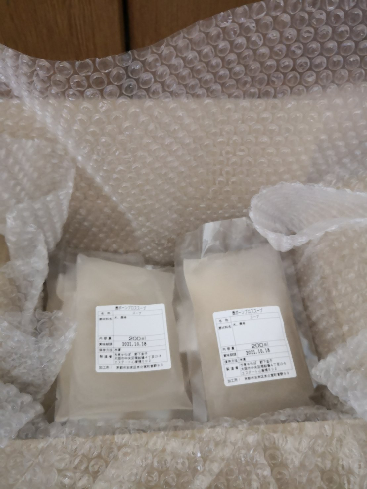

「いいシャンプーを使っているのに、髪がパサつく」「頭皮ケアをしているのに、抜け毛が気になる」——そう感じているなら、もしかしたら「内側からのケア」が足りていないかもしれません。
髪の主成分はケラチンというタンパク質です。そしてそのケラチンを合成するのに必要な材料——コラーゲン、アミノ酸、ミネラル——は、全部食事から来ます。
どんなに優れたトリートメントも、材料不足の体には補えない部分があります。外側のケアと内側のケア、両方が揃って初めて、髪は本来の元気を取り戻せるんです。
NUTRITION
髪に必要な栄養素
髪の健康に特に関わりが深い栄養素を整理してみます。
コラーゲン
毛根を支える頭皮の弾力・保湿に関わる。髪の強度にも影響し、不足すると細くなりやすい。
グリシン・プロリン
コラーゲンを構成するアミノ酸。骨髄や軟骨から摂取できる、動物性由来の必須成分。
ミネラル（亜鉛・鉄）
毛母細胞の細胞分裂を助ける。不足すると抜け毛・成長不足に。骨髄に豊富に含まれる。
脂溶性ビタミン
頭皮の炎症を抑え、皮脂バランスを整える。骨髄の脂質に含まれるビタミンA・Kが豊富。
これらの栄養素を一度に、しかも体に吸収されやすい形で摂れるのが、骨を長時間煮出した「ボーンブロス（骨スープ）」です。
BONE BROTH
なぜ骨髄スープなのか
ボーンブロスの歴史は古く、世界中のほぼすべての伝統的な食文化に登場します。日本でも「骨つき鶏の水炊き」「豚骨ラーメン」など、骨を煮出したスープは昔から日常にありました。
骨髄は骨の中心にある柔らかい組織で、血液をつくる造血幹細胞の場所でもあります。ここにはコラーゲンのもととなるアミノ酸、良質な脂質、ミネラルが凝縮して含まれています。
鹿の骨髄が特別な理由
私が京北で関わっている狩猟で獲れた鹿は、山を自由に駆け回り、野草や木の実を食べて育った野生動物です。飼育動物と比べて、余分な脂肪が少なく、筋肉質で、ミネラル含有量が豊かという特徴があります。
そしてもうひとつ大切なことが、「骨まで使い切る」という姿勢です。一頭の命をいただく以上、肉だけでなく骨・内臓・あらゆる部位を無駄なく活かす——これは単なるエコではなく、命への敬意でもあります。
PRODUCT
京北産 鹿骨髄スープ
chikyuraba / 地球場
鹿骨髄スープセット
京北産の鹿の全身の骨髄を山水でことこと炊いた、素朴だけどエネルギーの高いスープ。味付けなしで届くので、お味噌汁の出汁・鍋・リゾットなど、あらゆる料理に使えます。塩だけで味付けしてそのまま飲むのも◎
200ml × 8個セット｜冷凍発送｜防腐剤・保存料ゼロ
¥6,000（税込）
購入ページへ →
📦 冷凍パックで配送
200ml × 8個セット
防腐剤・保存料ゼロ
原材料：鹿骨・水のみ
こんな使い方がおすすめ
料理の出汁として使うのが一番シンプルで続けやすい方法です。毎日の味噌汁・スープ・炊き込みご飯のベースにすることで、無理なく継続できます。特別な「健康食」として気負わず、ふだんの料理の一部に取り入れてみてください。

RECIPES
骨髄スープを使ったレシピ3選
味付けなしで届くから、どんな料理にも合わせやすい。毎日の食卓に、無理なく取り入れてみてください。
RECIPE 01 ／ シンプルに飲む
塩だけのシンプルスープ
骨髄スープの味をそのまま楽しむ、一番シンプルな飲み方。朝に一杯飲むだけでも、体の内側から温まります。
INGREDIENTS
- 鹿骨髄スープ 200ml（1パック）
- 塩 ひとつまみ〜お好みで
- 黒こしょう 少々（お好みで）
- 乾燥パセリ 少々（お好みで）
HOW TO
- スープを小鍋に移して中火で温める
- 沸騰直前で火を止める
- 塩で味を整える
- カップに注ぎ、こしょうやパセリをお好みで

Photo: Unsplash
RECIPE 02 ／ すき焼き・鍋
鹿骨髄だしのすき焼き風鍋
骨髄スープを割り下のベースにしたすき焼き風の鍋。締めの雑炊やうどんまで余さず楽しめます。
INGREDIENTS
- 鹿骨髄スープ 200ml（1パック）
- 醤油 大さじ2
- みりん 大さじ2
- 砂糖（またははちみつ） 大さじ1
- お好みの野菜・豆腐・きのこ
- お好みの肉（鶏・豚・鹿肉など）
HOW TO
- 骨髄スープ・醤油・みりん・砂糖を鍋に合わせて温める
- 割り下が馴染んだら具材を加える
- 野菜に火が通ったら完成
- 締めは雑炊やうどんで骨髄だしを最後まで

Photo: Unsplash
RECIPE 03 ／ リゾット
骨髄スープのシンプルリゾット
骨髄スープをベースにしたリゾットは、胃腸が弱っているときにも食べやすい一品。体が弱ったときの回復食としても◎
INGREDIENTS
- 鹿骨髄スープ 200ml（1パック）
- 水 100〜150ml
- 米（洗わずそのまま） 70g
- 塩 小さじ1/2
- オリーブオイル 大さじ1
- パルメザンチーズ お好みで
- 旬の野菜・きのこ 適量
HOW TO
- 鍋にオイルと野菜を入れて軽く炒める
- 米を加えてさらに1分炒める
- 骨髄スープと水を加えて中火に
- 時々混ぜながら米が柔らかくなるまで15〜18分煮る
- 塩で味を整え、チーズをお好みで

Photo: Unsplash
FROM KEIKO
外側と内側、両方からケアする
美容師として、たくさんの方の髪に触れてきた中で感じることがあります。同じようなケアをしていても、「食事や生活習慣が整っている人の髪はしなやかで回復力がある」ということです。
ヘナをして、石けんシャンプーを使って、頭皮マッサージをして——外側のケアは大切です。でもそれだけでなく、「何を食べているか」「よく眠れているか」「ストレスはどうか」という内側の環境が、髪の状態に大きく影響しています。
私自身が狩猟に関わるようになってから、骨髄スープを日常的に飲むようになりました。命を丸ごと活かすという姿勢と、体の内側から整えるという考え方——それがつむぎの自然派美容の哲学とつながっています。
NEXT